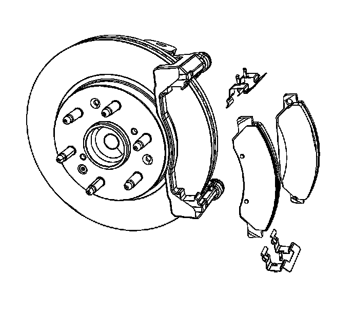
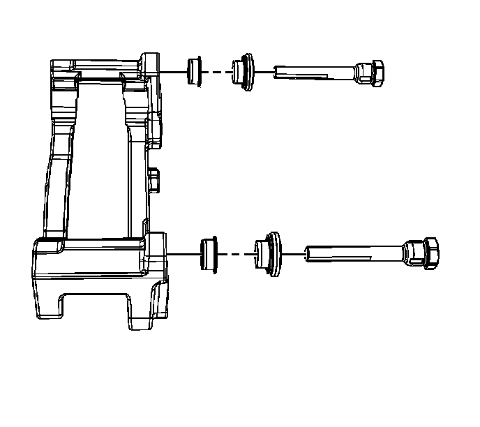
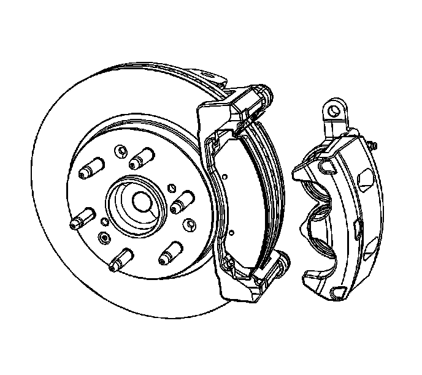

Front Disc Brake Hardware Replacement (1500 Series)
Front Disc Brake Hardware Replacement (1500 Series)
Caution: Refer to Brake Dust Caution.
Removal Procedure
1. Remove the tire and wheel assembly.
Important: Support the caliper with heavy mechanic's wire or equivalent. DO NOT disconnect the hydraulic brake hose from the caliper.
2. Remove the brake caliper from the caliper bracket.

3. Remove the brake pads from the caliper bracket.
4. Remove the brake pad retainers.

5. Remove the caliper pins, seals, and bushings from the caliper bracket.
Installation Procedure
1. Lubricate the caliper bushings, bolts and seals with high temperature silicone brake lubricant.
2. Install the caliper pin bushings, seals and pins to the caliper bracket.
3. Install the brake pad retainers to the caliper bracket.
4. Install the brake pads.

5. Install the caliper to the caliper bracket.
6. Slowly apply pressure to the brake pedal until a firm pedal is achieved.
7. Fill the master cylinder reservoir to the proper level with clean brake fluid, if necessary.
8. Install the tire and wheel assembly.